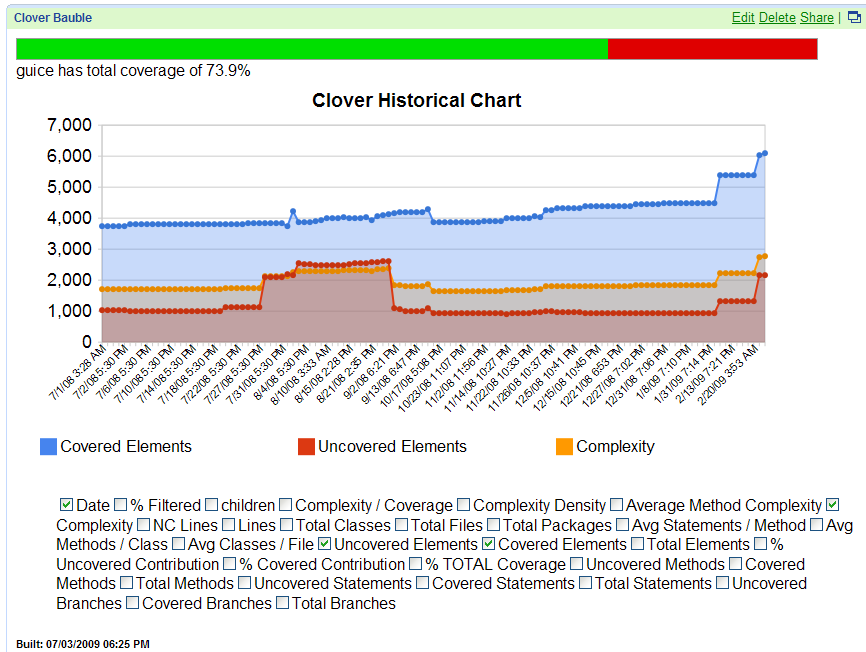

This page documents Clover-for-Ant's implementation of JSON data and how to make use of it.
On this page:
Why JSON?
The JSON format is supported as an output type in Clover specifically to create integration opportunities with other applications. The JSON data from Clover is easy to manipulate programmatically, allowing innovative developers to use it for displaying or processing their coverage data in novel ways.
Clover-Ant code for JSON output
<target name="report.json" depends="with.clover">
<clover-report>
<current outfile="clover_json">
<format type="json"/>
<columns>
<lineCount/>
<ncLineCount/>
</columns>
</current>
</clover-report>
</target>
JSON data format
Current report
Code snippet
<clover-report>
<current outfile="${clover.report}">
<format type="json"/>
</current>
</clover-report>
Files generated for a current report
<json_report_directory>
<package/name/directory>
aggregate-pkg-risks.js - the aggregated "Top Risks" cloud map for a package (including sub-packages)
aggregate-quick-wins.js - the aggregated "Quick Wins" cloud map for a package (including sub-packages)
<source file>.js - detail data for a source file (hit counts, statistics)
package.js - package summary (list of classes + package statistics)
pkg-risks.js - the "Package Risks" cloud map for a package (without sub-packages)
quick-wins.js - the "Quick Wins" cloud map for a package (without sub-packages)
colophon.js - build time stamp etc
project.js - project summary (list of packages + projects statistics)
proj-risks.js - the "Project Risks" cloud map for a project
quick-wins.js - the "Quick Wins" cloud map for a project
Format of a source file summary ("<source file>.js")
processClover ( {
"id": "com_cenqua_samples_money_Money_java", // name of source files, dots and slashes replaced by underscores
"lines": [ "", "", "157", "157" ], // hit counts for each source line
"stats": { // statistics, -1 means no data or not applicable
"Complexity": 18,
"CoveredElements": 42,
"ErroneousTests": 0,
"FailingTests": 0,
"PassingTests": 0,
"PcErroneousTests": -1,
"PcFailingTests": -1,
"PcPassingTests": -1,
"TestExecutionTime": 0,
"Tests": 0,
"TotalPercentageCovered": 89.3617,
"UncoveredElements": 5
}
} );
Format of a package summary (package.js)
processClover ( {
"children":["IMoney.java","MoneyBag.java","Money.java"], // list of files in the packages
"name":"com.atlassian.samples.money", // name of the package
"stats": { // statistics
"AvgClassesPerFile":1,
"AvgMethodComplexity":1.7419355,
"AvgMethodsPerClass":10.333333,
"AvgStatementsPerMethod":3.064516,
"ComplexityDensity":0.56842107,
"ComplexityToCoverage":58,
"CoveredBranches":39,
"CoveredMethods":31,
"CoveredStatements":90,
"FilteredElements":0,
"LineCount":286,
"NcLineCount":183,
"PercentageCoveredContribution":100,
"PercentageUncoveredContribution":100,
"TotalBranches":46,
"TotalChildren":3,
"TotalClasses":3,
"TotalElements":172,
"TotalFiles":3,
"TotalMethods":31,
"TotalPackages":0,
"TotalStatements":95,
"UncoveredBranches":7,
"UncoveredMethods":0,
"UncoveredStatements":5
// ... plus attributes as for a source file
}
} );
Format of a project summary (project.js)
processClover ( {
"children":["com/cenqua/samples/money/"], // list of packages
"name":"Clover database Pt gru 21 2012 09:22:03 CET", // name of the report
"stats": { // statistics
// ... attributes as for a package
}
} );
Format of top risks (proj-risks.js, pkg-risks.js, aggregate-pkg-risks.js)
processClover ( {
"axis": { // X-Y axis description
"x": {
"max":211,"min":128,"title":"Average Method Complexity"
},
"y": {
"max":10,"min":5,"title":"Coverage"
}
},
"classes":[ // values for a chart
{"name":"Money","path":"com/cenqua/samples/money/Money","x":128,"y":10},
{"name":"MoneyBag","path":"com/cenqua/samples/money/MoneyBag","x":211,"y":5}]
} );
Format of quick wins (quick-wins.js, aggregate-quick-wins.js)
processClover ( {
"axis": { // X-Y axis description
"x": {
"max":125,"min":47,"title":"# Elements"
},
"y": {
"max":7,"min":5,"title":"# Elements Untested"
}
},
"classes":[ // values for a chart
{"name":"Money","path":"com/cenqua/samples/money/Money","x":47,"y":5},
{"name":"MoneyBag","path":"com/cenqua/samples/money/MoneyBag","x":125,"y":7}]
} );
Historical report
Code snippet
<clover-report>
<historical outfile="${clover.report}" historydir="${historydir}" json="true"> <!-- json="true" generates historical-json.js file -->
<format type="html"/> <!-- Note that historical report does not handle format type="json" -->
<!-- ... -->
</historical>
</clover-report>
Format of historical-json.js file
processHistoricalCloverData ( {
"name": "money_demo", // name of the project
"table": [{
"cols": [ // list of available metrics and their data format
{
"id": "timestamp",
"label": "Date",
"type": "date"
},
{
"id": "FilteredElements",
"label": "% Filtered",
"type": "number"
},
// ...
],
"rows": [ // data
{"c": [ {
"f": "21.12.12 09:02",
"v": new Date(1356076936171)
}, {
"f": "0%",
"v": 0
},
// ...
]}
}]
} );
Examples of JSON report usage
JSON for a file page:
processClover ( {
"lines": ["", "", "10", "10", "10", "", "", "16", "1", "1", "1", "", "", "", "", "22", "22", "5678", "5678", "1", "1"],
"stats": {
"Complexity": 22,
"TotalPercentageCovered": 100,
"CoveredElements": 63,
"UncoveredElements": 0
},
"id": "org_apache_commons_codec_net_BCodec_java"
}
);
The "lines" array contains the hit counts for each line in the BCodec.java file.
JSON in an HTML page:
<!-- Define the callback function before including the java.js for the file you wish to process. -->
<script type="text/javascript">
function processClover(obj) {
alert(obj.id);
alert(obj.stats.CoveredElements);
alert(obj.stats.Complexity);
alert(obj.lines);
}
</script>
<!-- Now, include as many java.js files as you wish. Each will call your "processClover" callback function above. -->
<script type="text/javascript"
src="http://downloads.atlassian.com/software/clover/samples/codec/org/apache/commons/codec/StringEncoderAbstractTest.java.js">
</script>
<script type="text/javascript"
src="http://downloads.atlassian.com/software/clover/samples/codec/org/apache/commons/codec/net/BCode.java.js">
</script>
JSON live
demo
This example uses JavaScript alerts to display the JSON data. Click here to run the live demo.
Clover Historical Data in JSONP
You can also access Clover historical data using JSON or JSONP. If your coverage data is available online, you could view your coverage inside a Google Gadget.
Using this data, you can create your own visualizations in Javascript or HTML. The data from Clover is compatible with the Google Visualization API.
Basic example:
table: {
cols: [{id: 'timestamp', label: 'Date', type: 'date'}, ...],
rows: [{c:[{v: new Date(0), f: '1 January 1970 00:00'}, ...]}]
}
This is the basic JSON object produced by Clover. The above JSON object may be passed directly to a
google.visualization.DataTable constructor like so:
new google.visualization.DataTable(json.table[0], 0.5);
Example for use with Javascript:
var data = new google.visualization.DataTable(json.table[0], 0.5);
var chart = new google.visualization.AreaChart(document.getElementById('chart_div'));
chart.draw(data, {width: 800, height: 400, legend: 'bottom', title: 'Clover Historical Chart'});
Example Clover Gadget:
The screenshot below shows Clover historical data in a Gadget:
The XML source for this gadget is as follows:
http://labs.atlassian.com/gadgets/npellow/src/clover-gadget.xml
Screenshot: Clover in a Google Gadget
